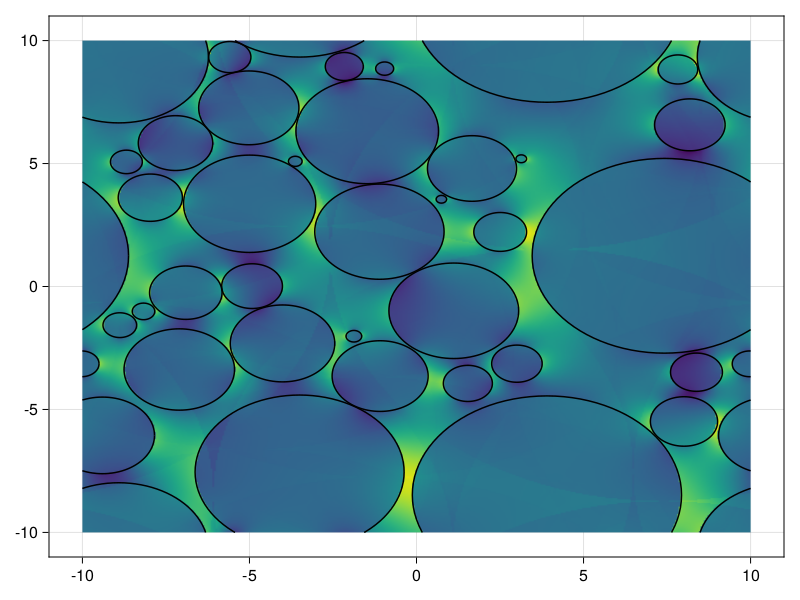
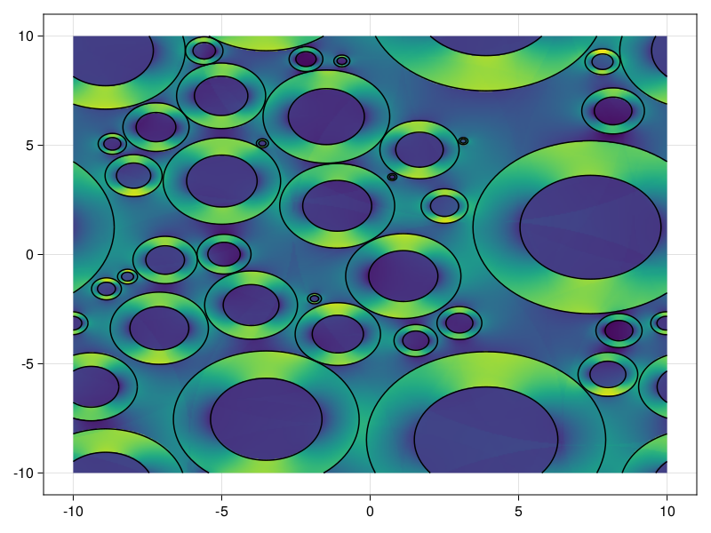

Off-resonance field
The off-resonance field will have three components:
- A global offset or gradient caused by the head shape (set within the
MicrostructureorSimulationobject). - The MRI gradients set within the sequence definition.
- The local off-resonance field caused by myelin, iron, blood, etc. For now only myelin is supported as described in the rest of this section.
Myelin off-resonance
The myelin surrounding some axons contributes to the off-resonance field experienced by the spins in the neighbourhood. Within MCMRSimulator.jl this off-resonance field is modeled in one of three ways:
- As an infinitely narrow sheath surrounding the cylinders.
- As uniform myelin between the inner and outer radius of an annulus.
- TODO: as a spiral
- TODO: as a mesh
By default all of these components do not generate an off-resonance field. The myelin will have to be explicitly turned on.
In all cases the magnetic susceptibility of myelin is set by two values:
- the isotropic magnetic susceptibiility (
chi_Iflag) - the anisotropic magnetic susceptibiility (
chi_Aflag)
Myelinated cylinders
The cylinder can be wrapped in a myelin sheath by setting g_ratio to a different value from 1. The myelin sheath will be infinitely thin, when considering collisions.
using MCMRSimulator
(positions, radii) = random_positions_radii((20, 20), 0.7, 2)
geometry = cylinders(radii; repeats=[20, 20], positions=positions, rotation=:y, g_ratio=0.6)
using CairoMakie
pp = PlotPlane(:y, size=20) # plane used for plotting
f = plot_off_resonance(pp, geometry) # plot off-resonance field generated by geometry
plot!(pp, geometry) # plot the actual geometry
Mathematical details
To still get realistic off-resonance fields for infinitely thin myelin shells, we have to slightly adjust the equations for the field generated by Samuel Wharton, Richard Bowtell (2012). Within the cylinder the off-resonance field the field given by Samuel Wharton, Richard Bowtell (2012) is:
\[\frac{\Delta \omega}{\omega_0} = \frac{3}{4} \chi_A \sin^2 \theta \ln \left(\frac{r_o}{r_i}\right)\]
Given a user-defined g-ratio ($g=r_i/r_o$) this becomes:
\[\frac{\Delta \omega}{\omega_0} = -\frac{3}{4} \chi_A \sin^2 \theta \ln g = \omega_{\rm internal} \sin^2 \theta\]
where $\omega_{\rm internal} \equiv -\frac{3}{4} \chi_A \ln g$ is precomputed when the Cylinder is created. This is multiplied by $\sin^2 \theta$ when callling off_resonance for the cylinder.
Outside of the cylinder the field is given by Samuel Wharton, Richard Bowtell (2012) as:
\[\frac{\Delta \omega}{\omega_0} = \left(\chi_I + \chi_A/4 \right) \sin^2 \theta \frac{\cos 2 \phi}{2} \frac{r_0^2 - r_i^2}{r^2}\]
Here are field depends on exactly how the inner and outer radius are related with the single cylinder radius ($r_c$). We choose $r_c \equiv (r_i + r_o)/2$. In that case $r_0^2 - r_i^2 = 4 * r_c^2 \frac{1 - g^2}{(1 + g)^2}$ and hence:
\[\frac{\Delta \omega}{\omega_0} = 2 \left(\chi_I + \chi_A/4 \right) \sin^2 \theta (2 \cos^2 \phi - 1) \frac{r_c^2}{r^2} \frac{1-g^2}{(1 + g)^2}\]
where we have also used $\cos 2 \phi = (2 \cos^2 \phi - 1)$. Once again we pre-compute most of this equation ($\omega_{\rm external} \equiv 2 \left(\chi_I + \chi_A/4 \right) r_c^2 \frac{1-g^2}{(1 + g)^2}$ when the Cylinder is created. This is multiplied by $\sin^2 \theta (2 \cos^2 \phi - 1) / r^2$ when callling off_resonance for the cylinder.
Myelinated annuli
This fills the Annulus with myelin between the inner and outer radius. The off-resonance field from this myelin is given by Samuel Wharton, Richard Bowtell (2012).
using MCMRSimulator
(positions, radii) = random_positions_radii((20, 20), 0.7, 2)
geometry = annuli(0.6 .* radii, radii; repeats=[20, 20], positions=positions, rotation=:y, myelin=true)
using CairoMakie
pp = PlotPlane(:y, size=20)
f = plot_off_resonance(pp, geometry)
plot!(pp, geometry)